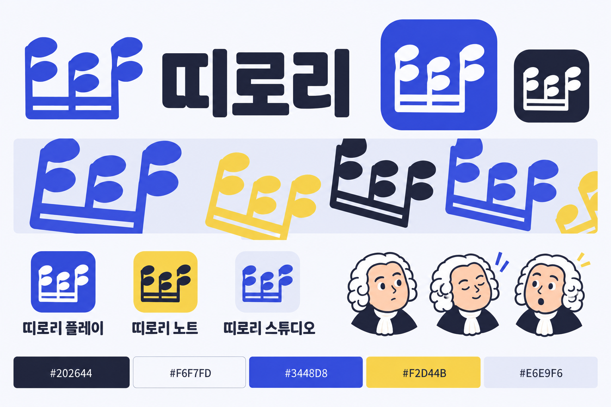
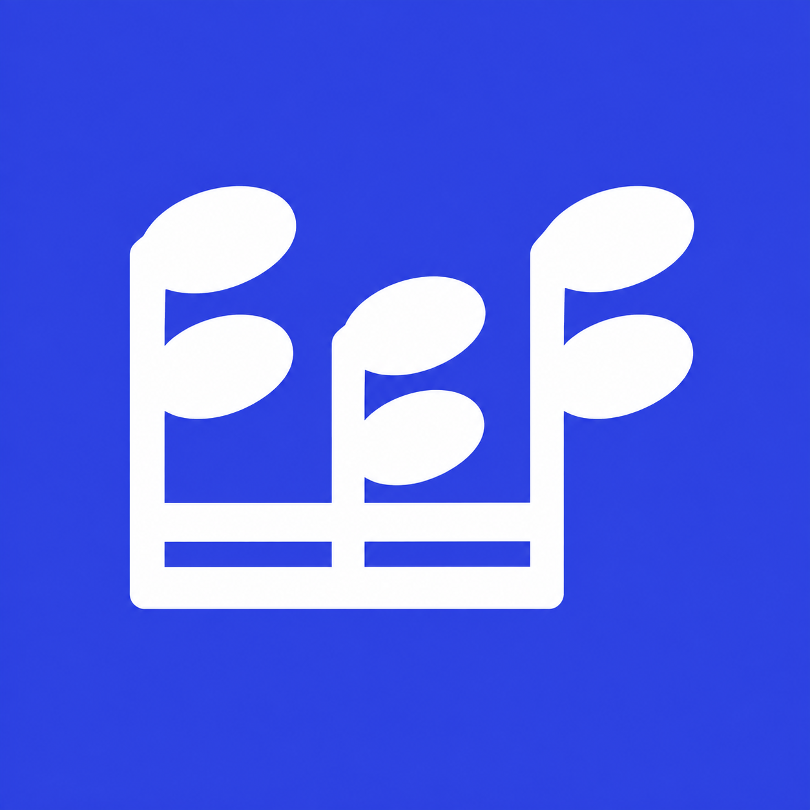
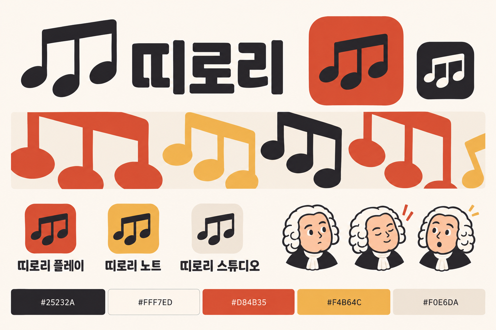
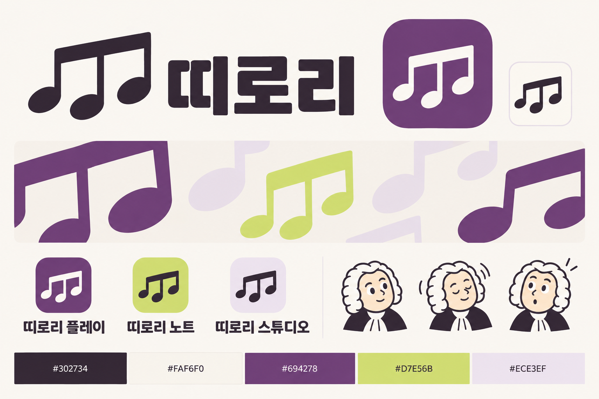

띠로리, 군청과 노랑.
세 음군의 높낮이와 아래 연결선에서 만든 심벌. 바흐의 재치는 보조 표정으로 더한다.

기준 팔레트
- 군청
#3448D8대표 아이콘·행동·강조 - 노랑
#F2D44B짧은 강조·보조 그래픽 - 짙은 남색
#202644워드마크·본문·윤곽 - 밝은 바탕
#F6F7FD기본 화면·여백 - 연한 군청
#E6E9F6카드·선택 주변의 면
대표 아이콘


크기를 줄여 보며 연결선·음표머리·여백을 확인한다. 플랫폼별 마스크를 검수한 출시 아이콘은 아니다.
화면에 쓰는 방식
선택한 방향
띠로리 노트
본문은 짙은 남색, 행동은 군청으로 구별한다.
흰 글자 / 군청: 6.85:1
짙은 글자 / 노랑: 10.05:1
정확한 HEX 쌍을 계산한 값이다. 생성 이미지의 모든 픽셀이 같은 색이라는 의미는 아니다.
다크 파생안 · 검토용
짙은 바탕 #1D2133
밝은 글자 #F0F2FF
브랜드 배너
바흐는 로고를 대신하지 않는 보조 표현이다. 현재 이미지는 정적 표정이며 새 로딩 애니메이션을 구현한 결과는 아니다.
초기 팔레트 비교 기록
아래는 색을 고르기 위한 초기 보드다. 일반적인 세 음표를 사용했던 단계이며, 현재 심벌은 위의 옥타브 쌍 구조다.


기본 image_gen으로 제작 · 제품 미적용 · 자산 목록